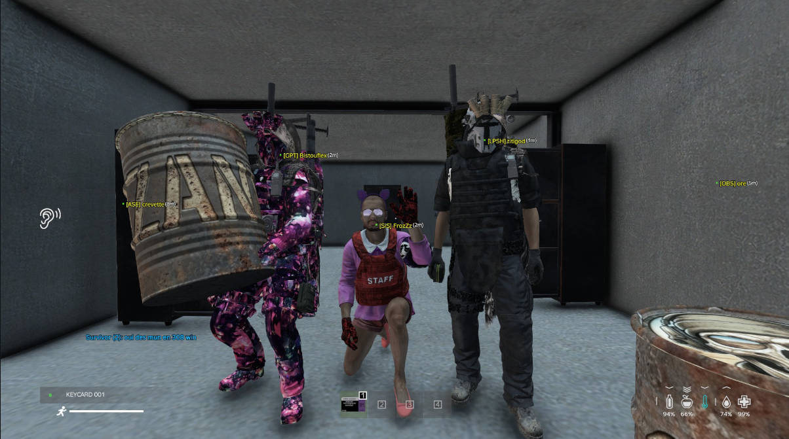
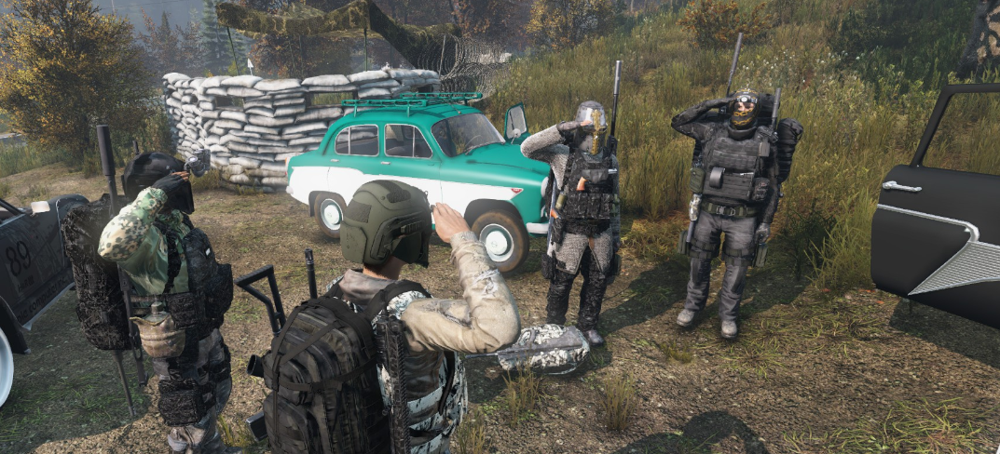
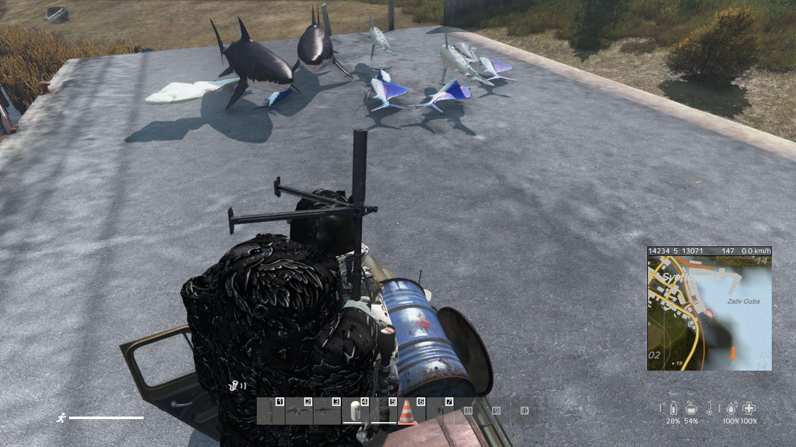
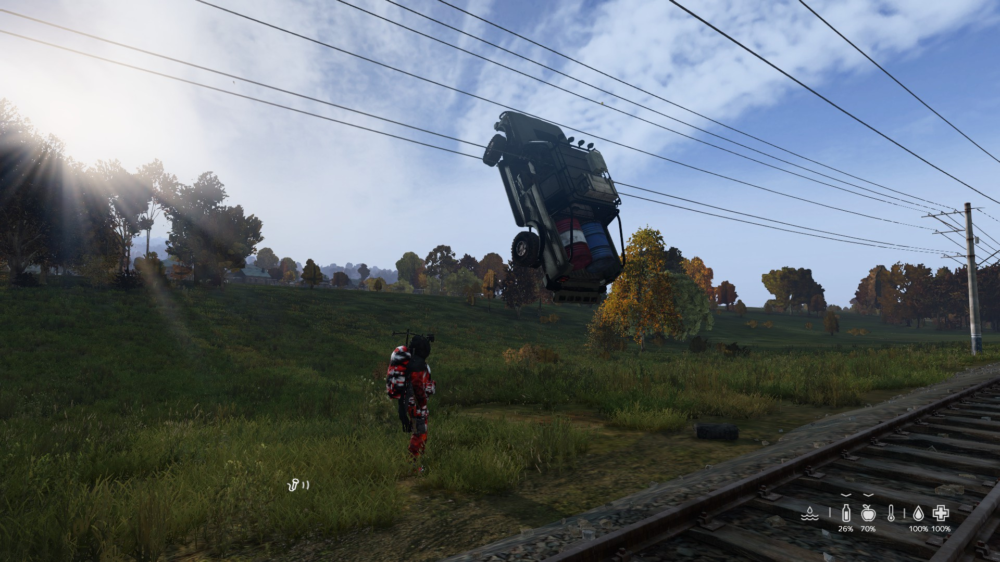
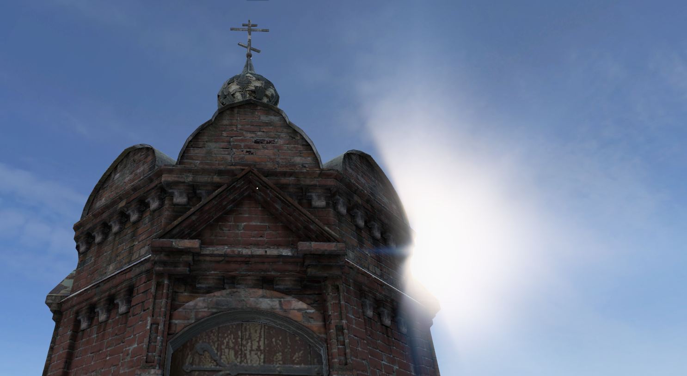
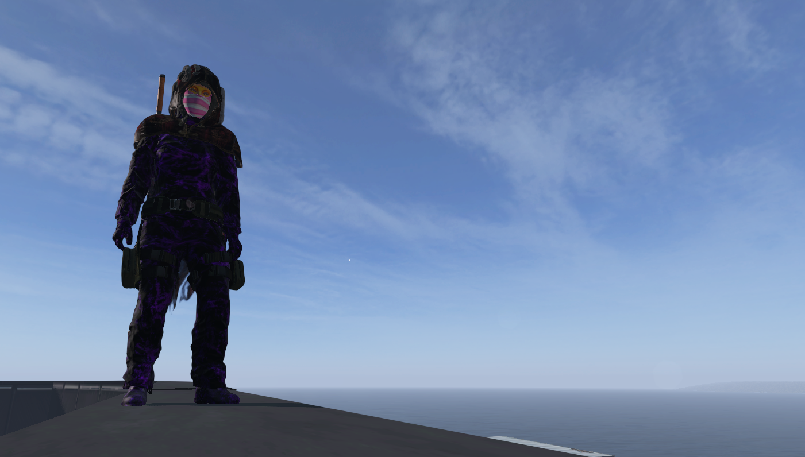
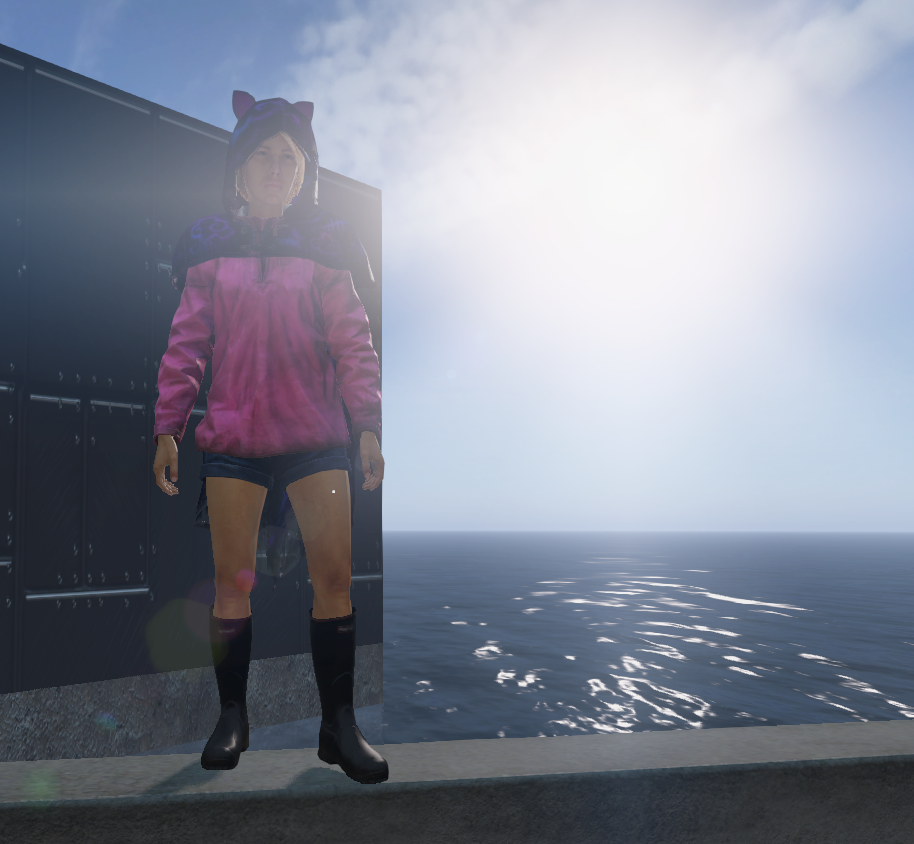
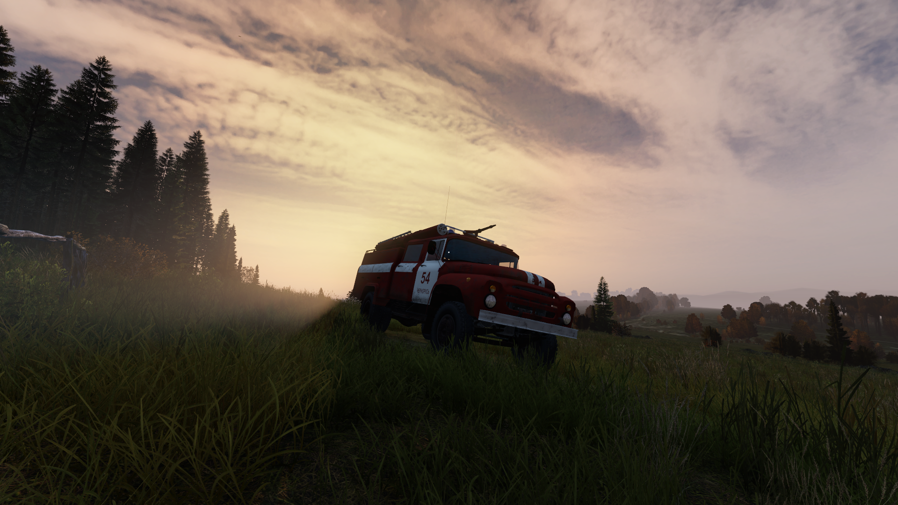

Pris sur le vif
Galerie communautaire
Des aventures, des rencontres et quelques situations que seul DayZ peut rendre possibles.












Cliquez sur une image pour l'afficher en plein écran.